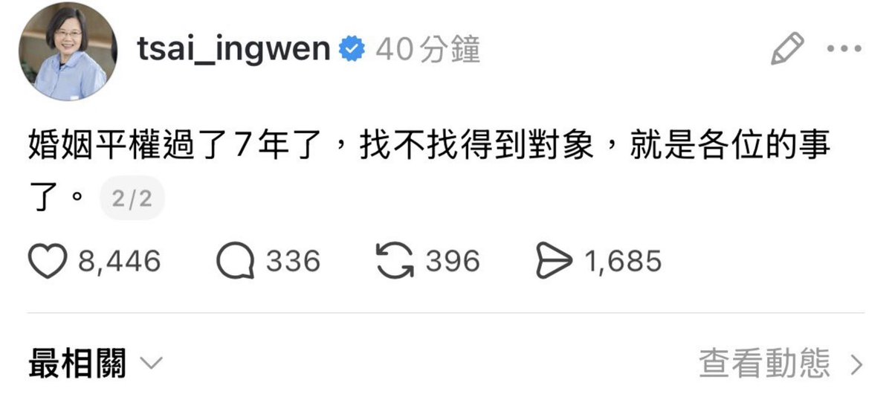

サイバー環状線
@CyberKanjousen
中国大陆的婚姻平权也已经好多年了，结婚率还不是连年下降？
光婚姻平权是不够的。女拳和男拳言论的横行、骗婚行为多发等等也会对结婚意愿造成负面影响。一方面应当控制女拳男拳言论，另一方面应当打击「捞女」以及「天价彩礼」等不良风气。
关于彩礼，環状線已经很久没有见过反对「天价彩礼 」的宣传了，相反，鼓励彩礼的言论反而大行其道。
環状線目前不打算结婚，但仍然希望这些不良风气能够被消灭掉。毕竟结婚率低下将导致生育率低下，而生育率低下又将带来更多的社会问题。
